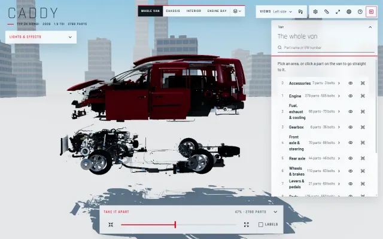
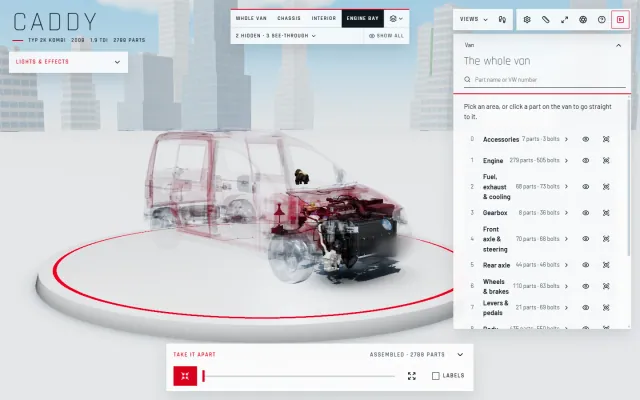
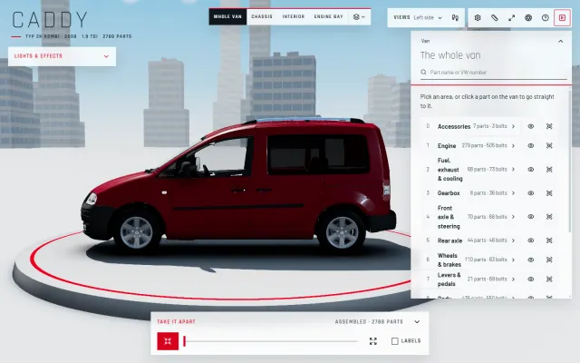
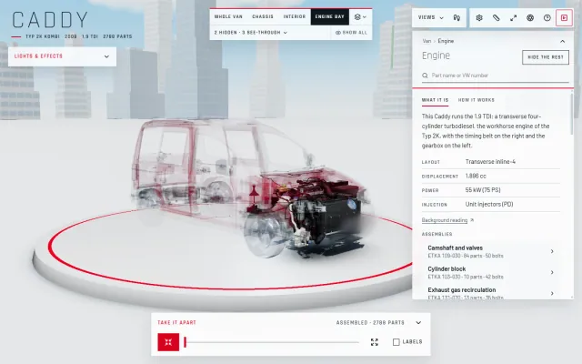
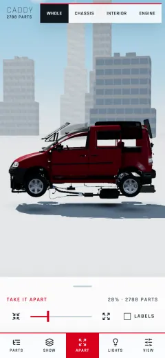
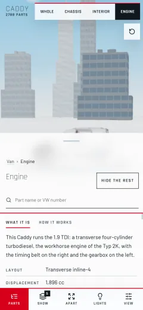

VW Caddy Studio
Interactive 3D studio to take a 2008 VW Caddy apart, part by part, in the browser
Shots
-

View larger1 Taking the van apart: body shell lifted off the running gear at 47% -

View larger2 Engine bay view: the body turns see-through to show the 1.9 TDI -

View larger3 The whole van in the studio, with the parts navigator -

View larger4 Opening the engine: what it is, how it works, key specs and its assemblies -

View larger5 Phone layout: the explode slider in a bottom sheet -

View larger6 Phone layout: part details


VW Caddy Studio is a browser-based 3D explorer of a 2008 Volkswagen Caddy Typ 2K Kombi with 2,788 separately named parts. You can explode the van with a slider, make areas see-through, open any assembly or part to read what it is and how it works, and view it in a studio, a car park, a garage or a city scene. The model is built by Blender Python scripts: every part follows the VW parts catalogue's drawings, and the geometry is cleaned and checked automatically. Photo mode path-traces the current view with WebGPU and a denoiser, and falls back to WebGL where WebGPU isn't available.
Highlights
- 2,788 individually named parts across 10 areas, every bolt and fastener included
- Explode slider plus per-area see-through and isolate controls
- Model built by about 145 Blender Python scripts, with a cached build and automated geometry checks
- Path-traced Photo mode on WebGPU with a denoiser, plus a WebGL fallback
- Desktop and phone layouts, four scenes, time of day and weather
- Period
- SEP–NOV 2026
- Status
- live
- Kind
- app
- Stack
- Vue 3
- TypeScript
- Vite
- Three.js (WebGPU)
- three-gpu-pathtracer
- Tailwind CSS 4
- shadcn-vue
- Blender Python
- glTF + Draco